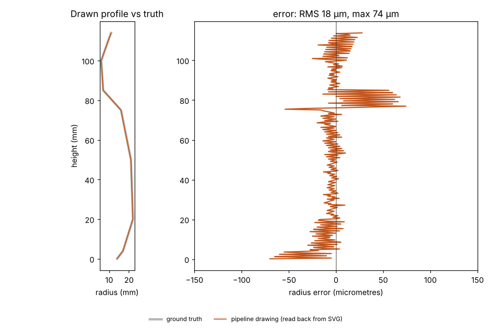
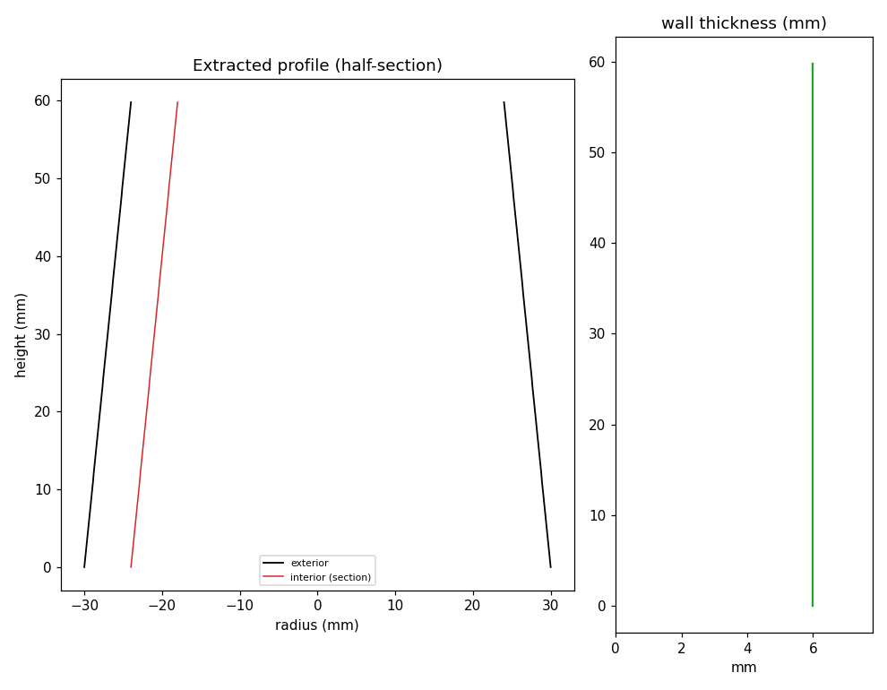

Sample output
What a run produces, and how close it gets to the known answer.
Read this first. These samples come from test geometry with a known answer (a synthetic vessel, and a vessel cropped from an open museum scan). They show the processing is correct. They are not a result from a photographed sherd.
A full run, start to finish
Input: a synthetic vessel mesh with a handle, a turntable disc, 40 noise islands and 0.05 mm surface noise, 43 components in all. One command produced everything below.
python run.py --config cfg.yaml --input vessel.ply --outdir out/The drawing

drawing.svg: both halves of the outline, dashed centre line, scale bar, caption. Exterior-only data, so one wall line per side. The handle was a separate piece of the test mesh, so cleanup removed it before profiling.The report
{
"input": "synthetic_vessel_with_handle_turntable_noise.ply",
"verdict": "GO",
"flags": [],
"cleanup": {
"components_before": 43,
"kept_fraction": 0.9952,
"compactness_ratio": 0.387
},
"profile": {
"axis_method": "pca",
"axis_dir": [
-0.0,
-1.0,
0.0
],
"height_mm": 113.62,
"max_radius_mm": 21.996,
"mean_angular_coverage": 1.0,
"wall_thickness_mm": null
},
"outputs": {
"clean": "clean.obj",
"drawing": "drawing.svg"
}
}Cleanup went from 43 components to 1 and kept 99.5% of the faces. The axis came out vertical, coverage was complete, and the verdict is GO.
How close is the drawing to the truth?
The drawing is read back from the published SVG and compared to the analytic profile used to build the vessel.

Accuracy across test cases
| Case | Radial RMS | Max | Verdict |
|---|---|---|---|
| Complete vessel, handle, turntable, noise | 0.018 mm | 0.074 mm | GO |
| Same, tilted 25° | 0.018 mm | 0.074 mm | GO |
| Rim sherd, 360° arc | 0.026 mm | 0.079 mm | GO |
| Rim sherd, 180° arc | 0.047 mm | 0.095 mm | GO |
| Rim sherd, 120° arc | 0.022 mm | 0.082 mm | GO |
| Rim sherd, 90° arc | 0.055 mm | 0.105 mm | GO |
| Rim sherd, 60° arc | 1.4 mm | 4.0 mm | REVIEW |
Reproduce with python cpu/tools/synthetic_validation.py out/. It takes about 30 seconds and needs no downloads.
On a real museum scan


rim_arc method reaches sub-degree axis error from about 90° of clean rim; PCA never does.Wall thickness

A drawing from a cropped fragment